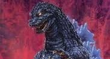
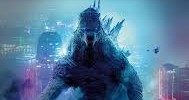

Showa

Onde tudo começou: Do terror da bomba atômica ao herói da garotada. A era Showa engloba os primeiros 15 filmes do Godzilla. Ela é marcada por uma enorme mudança de tom ao longo dos anos: O Início: Começa em 1954 com o filme original, onde o Godzilla é uma metáfora sombria, assustadora e trágica para as armas nucleares e a destruição da Segunda Guerra Mundial. A Transição: Nos anos 60, o tom começa a mudar. Godzilla deixa de ser o vilão destruidor e passa a enfrentar outras ameaças (como King Ghidorah). O Auge Pop: Nos anos 70, os filmes viraram uma verdadeira "festa " de ficção científica galhofa, feita para crianças. O Godzilla virou o herói da Terra, dava voadoras com cauda, conversava com outros monstros e lutava contra alienígenas e robôs (como o Mechagodzilla). Resumo da ópera: Começou como um drama de terror nuclear e terminou como um herói de ação infantil que dançava para comemorar vitórias.
Heisei

A Era Heisei do Godzilla (que vai de 1984 a 1995) é considerada por muitos fãs como a era de ouro da franquia, trazendo uma cronologia amarrada, tom mais sério e monstros icônicos. Aqui está um resumo dos principais pontos: O Reinício (Retcon): A era Heisei ignora todos os filmes da era Showa anteriores, exceto o clássico original de 1954. Ela começa com O Retorno de Godzilla (1984) e se passa durante o período de Guerra Fria. Tom Mais Sombrio e Realista: O tom infantil dos anos 70 foi descartado. Godzilla volta a ser uma força da natureza aterrorizante, uma metáfora viva do perigo nuclear, e a humanidade usa alta tecnologia (como o famoso veículo militar Super X) para tentar contê-lo. Continuidade Estrita: Ao contrário de outras eras, os filmes Heisei seguem uma linha do tempo contínua e direta. Os danos de um filme são lembrados no próximo, e os personagens humanos evoluem ao longo da saga (como a paranormal Miki Saegusa, que aparece em quase todos os filmes).Inimigos Memoráveis: Foi nesta era que nasceram vilões icônicos com designs biológicos complexos, como Biollante (um híbrido de planta, humano e Godzilla), SpaceGodzilla e o devastador Destoroyah. Monstros clássicos como King Ghidorah, Mothra e Mechagodzilla também foram repaginados. O Fim Trágico: A era encerra-se de forma épica em Godzilla vs. Destoroyah (1995), onde o coração nuclear de Godzilla entra em fusão (o famoso Burning Godzilla), levando o monstro à morte por derretimento radioativo, enquanto seu filho (Godzilla Jr.) absorve a energia para se tornar o novo rei.
Millennium

Após o fiasco do filme americano de 1998 (o famoso "Zilla"), a Toho decidiu retomar o controle do monstro antes do esperado. A Era Millennium é marcada pela experimentação e falta de uma cronologia fixa. Antologia de Histórias: Ao contrário da Era Heisei, quase todos os filmes Millennium funcionam como histórias independentes. Eles ignoram os filmes anteriores e servem como sequências diretas apenas do clássico original de 1954. O Visual "Jacaré": O design do Godzilla mudou drasticamente, ganhando uma postura mais felina/reptiliana, pele esverdeada e espinhos dorsais roxos e pontiagudos. Foco na Ação e Ficção Científica: Os filmes trouxeram batalhas intensas e conceitos bizarros, como alienígenas controladores de mentes e mechas altamente tecnológicos (como o Kiryu, uma versão do Mechagodzilla construída em cima do esqueleto do Godzilla original de 1954). O Grande Final: A era terminou em grande estilo com Godzilla: Final Wars (2004), uma celebração de 50 anos da franquia onde o Godzilla viaja pelo mundo derrotando quase todos os monstros clássicos da Toho em uma vibe de ação frenética estilo Matrix.
Monster-Verse

O Blockbuster moderno: Deuses ancestrais e pancadaria em Hollywood.O MonsterVerse é a franquia americana atual, criada pela Legendary Pictures em parceria com a Toho. É um universo compartilhado moderno, focado no realismo visual e no espetáculo de efeitos visuais: A Proposta: Aqui, Godzilla e Kong são chamados de "Titãs" — forças antigas da natureza que mantêm o equilíbrio do planeta. A humanidade é apenas uma coadjuvante tentando não ser esmagada. A Evolução: Começou de forma mais séria e misteriosa em Godzilla (2014), mas rapidamente abraçou a ação desenfreada e a ficção científica exagerada em Godzilla: Rei dos Monstros, Godzilla vs. Kong e Godzilla x Kong: O Novo Império.Destaque: Introduziu o conceito da Terra Oca, um ecossistema inteiro escondido no centro do planeta de onde os monstros vieram. Resumo da ópera: É a versão de Hollywood para os kaijus, focada em lutas colossais com orçamentos gigantescos, onde o Godzilla é uma força da natureza implacável que protege seu trono.